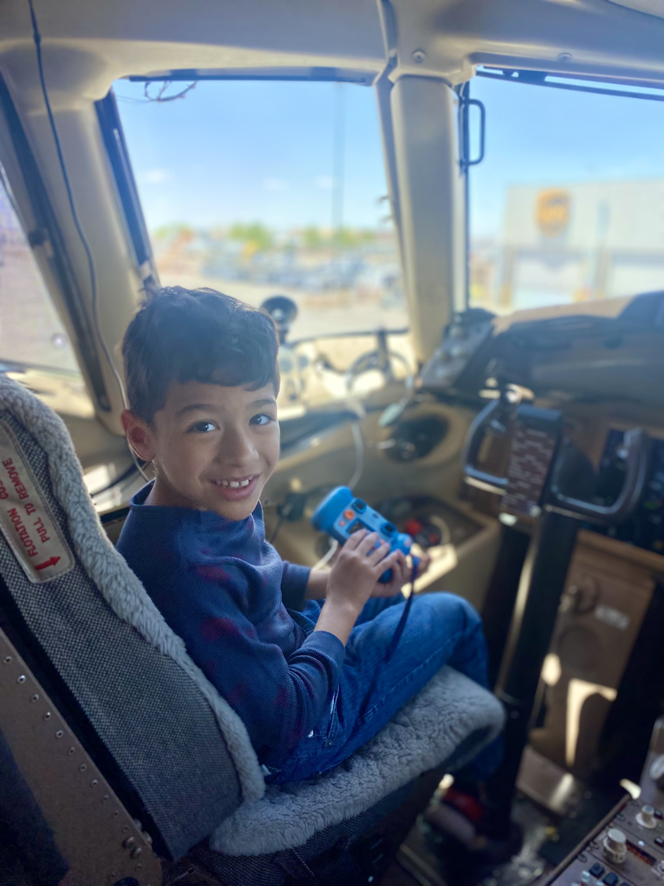
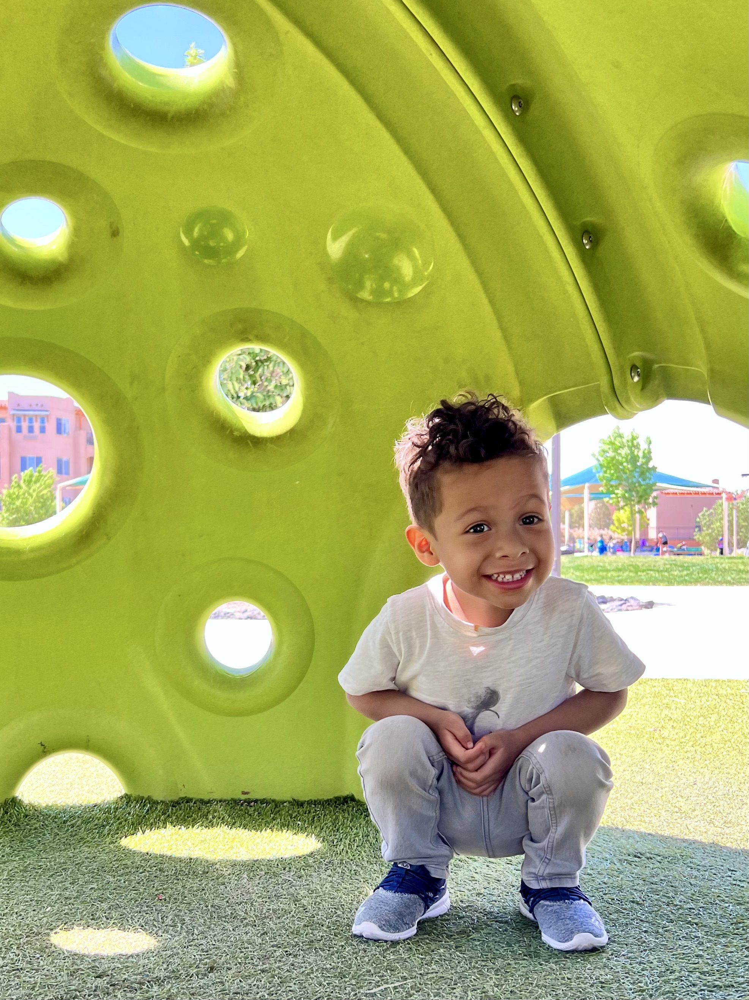

About Me
My name is Homero Montoya I'm 33 years old, this december I'll be married to my beautiful wife for 10 years! We have 2 boys, Guillermo and Gerardo ages 8 and 3. I moved to the US from Michoacan Mexico when I was 8 years old I've lived in and around Albuquerque New Mexico up until several months ago when I moved to KCMO! I work for a local cleaning company in KC but before the pandemic I worked in and operated my own small business in NM. As with everyone else, being shut in was a very difficult time for myself and my family. This was part of the reason to move to KC start Launch Code and hopefully a new beginning!
Fun Facts
 Some fun facts about me are:
- Homero is "Homer" in spanish and that's why "H" isn't pronounced
- I speak Spanish, French and a little Mandarin Chinese
- When I was a child I climbed into trailer full of grape crates where my family worked!
Nobody knew and truck driver left with me inside the trailer. When my grandfather realized I was missing,
he was some how able to connect with the truck driver and picked me up a couple of states over! - I had a huge childhood crush on Lindsay Lohan!
Interests
My interests include:
- I enjoy being active and spending time with my boys, they're my best pals!
- Anything that involves creating something with my hands such as carpentry, pottery, building models and making cakes to name a few.
- Staying active and exercising!
- I love food! trying new cuisines is one of my greatest joys in life! I also enjoy cooking and baking at home.
- Although I don't get the chance to do it too often, I really enjoy creating art such as paintings photography and even poetry.